An Education System for Slack
A system for how Slack teaches — turning hundreds of one-off messages into shared patterns that are easier for users to understand and teams to build.

Project at a glance
An education framework and library
Slack had a design system for the permanent furniture of the product — sidebar, composer, buttons, modals — but not for how Slack teaches, introduces something new, or explains a change.
The missing piece was an education system: shared patterns, components, and rules for how Slack communicates with its customers in product.
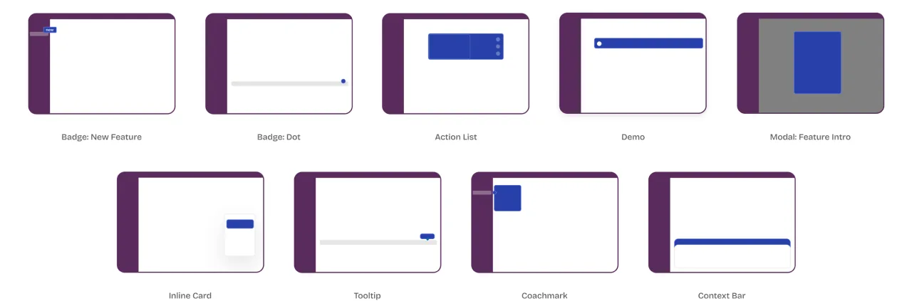
Slack’s biggest problem was noise
As a collaboration product, messages between co-workers are the point. But there were no rules for how Slack itself talked to customers, so every product message added to the same pile. A common system could make those interruptions fewer, clearer, and more intentional.
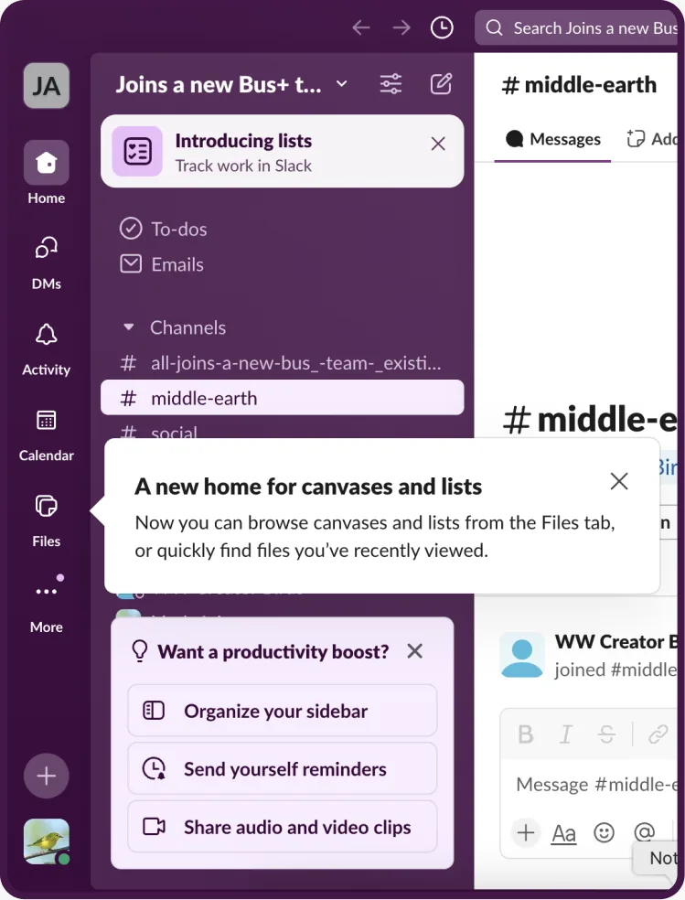
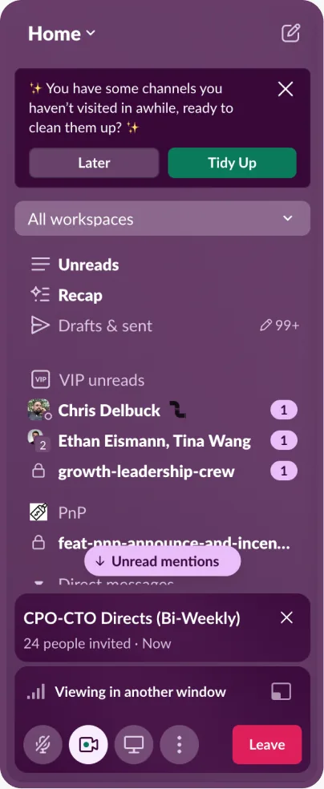
-
01
Teams kept inventing
Every team built its own version of the same thing.
-
02
No rule for choosing
Nothing said which pattern to use — or whether to interrupt at all.
-
03
Nothing went away
Nothing expired, growing to ~560 messages across 177 places.
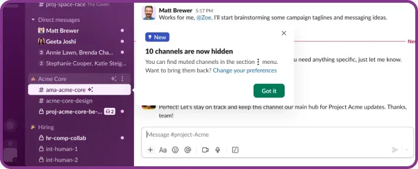
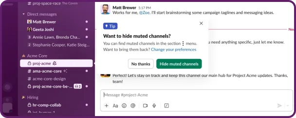
Organizing Slack’s content
Before simplifying education, we needed a map of the whole problem. Research and an audit organized Slack’s messages into three families and nine properties.
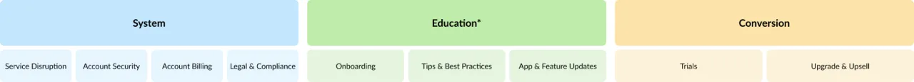
Turning the map into something usable
Like most systems, the ontology organizes messages by what they are — category, intent, urgency. That is the taxonomy the business thinks in. Education became the first layer to ship, and it bridges the gap with users by organizing itself around the moment the user is in instead.
The result was three parts designed to work together:
- Framework Helps designers choose the right pattern.
- UI system Reinforces what each pattern means for users.
- Engineering guardrails Control when, where, and how often messages appear.
What shipped
The education framework became a library of patterns and variants in Slack Kit — giving teams a shared starting point for common education moments across desktop and mobile.
Instead of designing each experience from scratch, teams could choose a pattern based on the behavior they wanted to support, then adapt it to their feature and surface.
- 5 Patterns, with one written rule for choosing between them. Desktop + mobile
- UI Kit Education Kit live in code and in the Slack Kit Figma libraries
- 20% Of the inventory retired in two months, with guardrails in place to keep it down
Every pattern has a job
Onboarding helps people set up, NUX gets them activated, tours guide them through something unfamiliar, and suggestions educate them on what else is possible.
A shared visual language reinforces those expectations. Consistent anatomy, color, and behavior help people recognize what kind of help they’re getting — and what’s expected of them — before they read.
New User Experiences
Getting someone from an empty workspace to a first meaningful action.
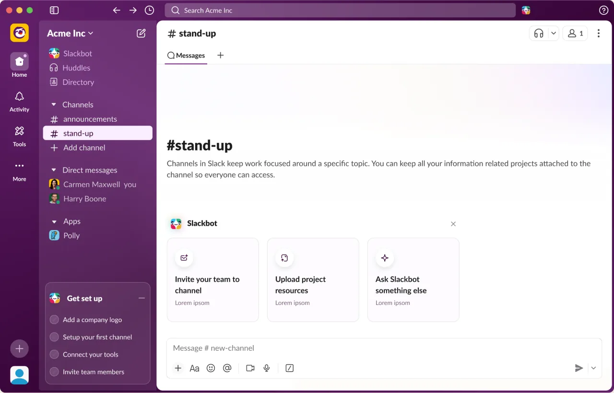
Empty states & Onboarding
The feature starts empty, or needs setting up before it can be used at all.
Education for existing users
People already set up and active, who have more value still to find.
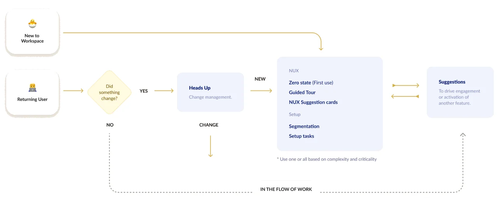
Heads-Up
Something was added, moved or removed since they were last here — for large and small updates alike.
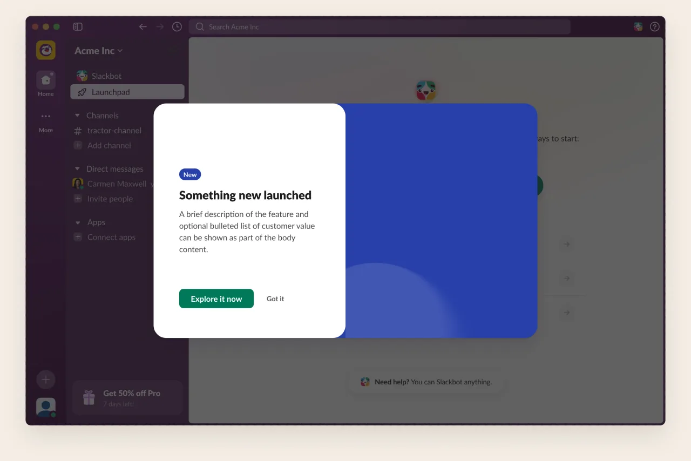
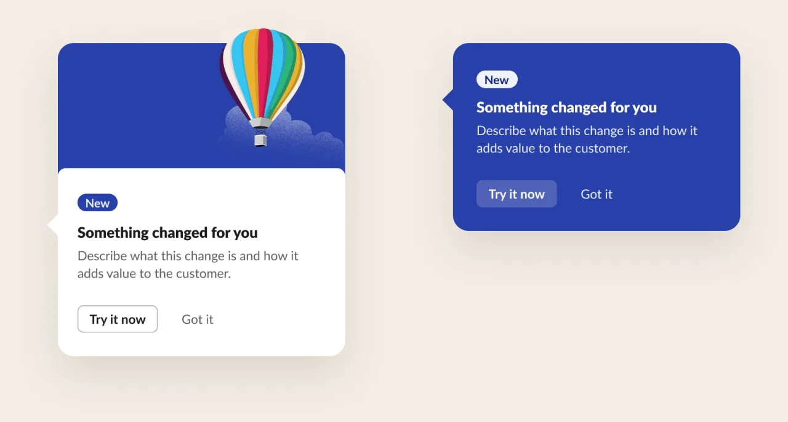
Guided Tour
The surface is complex or unfamiliar and needs orienting.
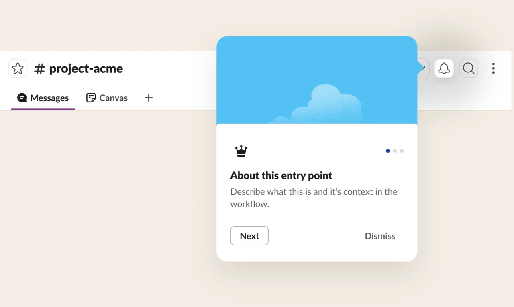
Suggestions
They are set up and active, and there is more value to surface.
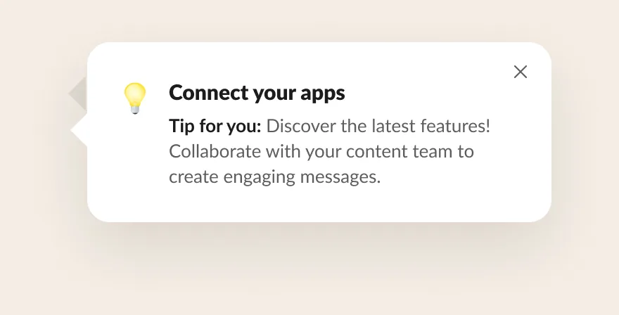
Rules built into the system
A pattern library still asks people to remember, so the same rules went into Megaphone.
One message at a time
Expiry by default
Performance built in
Where it goes
Education was the first branch of the ontology to get a design layer. Upgrade messaging and system alerts are next.
The goal is for the next designer to find the right pattern in Slack Kit without ever knowing there was a gap.
A design system catches a bad component. It doesn’t catch a hundred good ones landing on the same person.